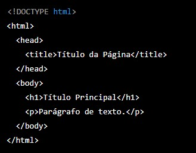
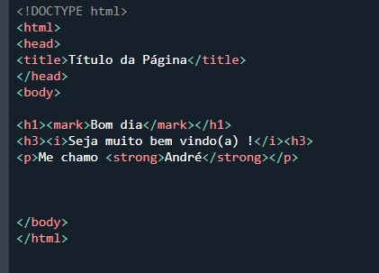
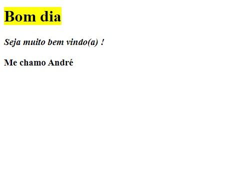

Colossus - Alemanha
ENIAC - Estados Unidos
Obs: em 1963, Douglas Engelbart, criou o mouse para desenvolver uma forma mais intuitiva de interagir com computadores.
A história da internet começa na década de 1960, quando o Departamento de Defesa dos Estados Unidos lançou um projeto chamado ARPANET (Advanced Research Projects Agency Network), o objetivo era criar uma rede de computadores que pudesse sobreviver a um ataque militar, em caso de guerra, a comunicação poderia continuar mesmo que algumas partes da rede fossem destruídas.O primeiro nó da ARPANET foi criado em 1969, ligando a Universidade da Califórnia, Los Angeles (UCLA) ao Stanford Research Institute (SRI). Logo em seguida, outras universidades e centros de pesquisa foram conectados à rede, e o protocolo TCP/IP (Transmission Control Protocol/Internet Protocol) foi criado para permitir a comunicação entre diferentes computadores.
Na década de 1970, a ARPANET se expandiu rapidamente, e a ideia de uma rede global de computadores começou a surgir. Em 1983, a ARPANET foi dividida em duas redes, uma militar e outra civil, o protocolo TCP/IP se tornou o padrão para comunicação entre todas as redes.
Nos anos 1990, a internet se popularizou rapidamente, com a criação de navegadores web, como o Netscape Navigator e o Internet Explorer, e junto, a criação de sites que permitiam a comunicação e a troca de informações. A World Wide Web, criada em 1989 pelo cientista britânico Tim Berners-Lee, permitindo a criação de páginas web e navegação por hipertexto, o que facilitou muito o acesso e a troca de informações na rede.
Atualmente, a internet é uma rede global de computadores que conecta bilhões de pessoas em todo o mundo, permitindo a comunicação instantânea, trocando informações, realizando transações comerciais e financeiras. A história da internet continua em constante evolução, com novas tecnologias e aplicativos sendo desenvolvidos a cada dia.
HTML significa "HyperText Markup Language" , ou melhor, "Linguagem de Marcação de HiperTexto"; Uma linguagem de computador que compõe a maior parte das páginas da internet e dos aplicativos online. A linguagem de marcação é composta por uma série de comandos que dizem para os servidores da web qual é o estilo e a estrutura de um documento.O HTML não é considerado uma linguagem de programação, já que ele não pode criar funcionalidades dinâmicas. Ao invés disso, com o HTML, os usuários podem criar e estruturar seções, parágrafos e links usando elementos, tags e atributos.
Abaixo alguns dos usos mais comuns para o HTML:
- Desenvolvimento web - Os desenvolvedores usam códigos HTML para projetar como um navegador vai exibir os elementos das páginas, como por exemplo textos, hiperlinks e arquivos de mídia.
- Navegação na internet - Os usuários podem navegar facilmente entre páginas e sites relacionados, através dos "links"
- Documentação - O HTML torna possível a organização e a formatação de documentos, de maneira similar ao Microsoft Word.
A estrutura básica é composta por um conjunto de elementos ("Tags") que formam uma página web.
A seguir está um exemplo de estrutura básica do HTML:

Explicando cada parte:
- !DOCTYPE html: Define o tipo de documento HTML.
- html: Elemento raiz que engloba todo o documento HTML.
- head: Contém informações sobre a página, como título, metadados e links para arquivos externos.
- title: Define o título da página que aparece na barra do navegador.
- body: Contém todo o conteúdo da página visível ao usuário.
- h1: Defina o título principal da página.
- p: Defina um parágrafo de texto.
Essa é apenas uma estrutura básica, e é possível adicionar muitos outros elementos e atributos para criar páginas mais complexas e interativas, utilizando as "Tags"
volte ao inícioAs tags em HTML são elementos que definem a estrutura e o conteúdo de uma página web. Cada tag é identificada por um nome entre os caracteres " < " e ">". Algumas tags possuem atributos que modificam seu comportamento ou aparência.
Abaixo segue um exemplo de texto em HTML,e o seu resultado : 